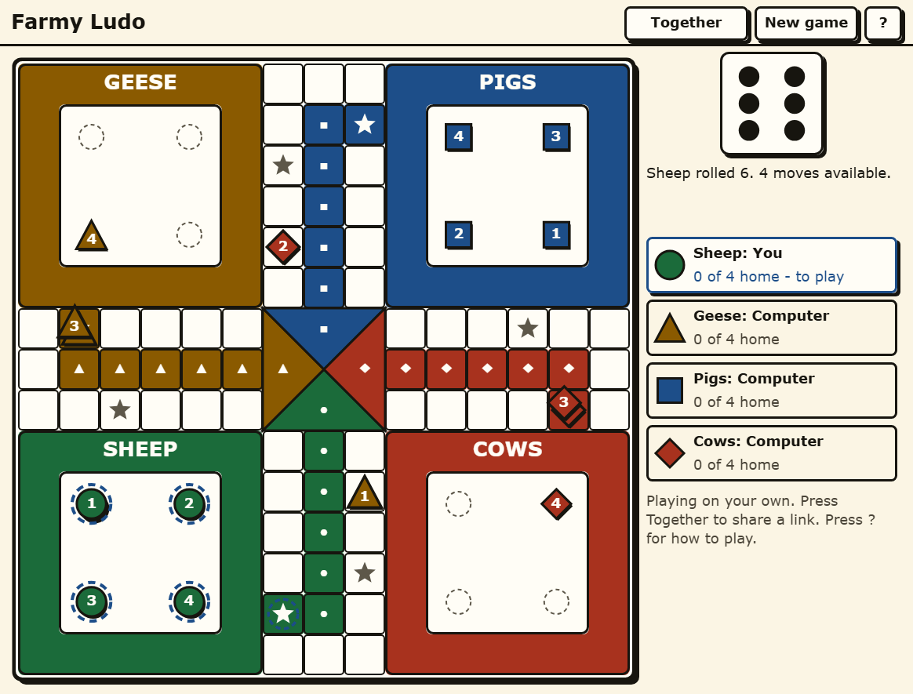

Farmy Ludo
Four teams, four pieces each, a six to come out and an exact roll to get home — in pieces you can read across the room.
Play Farmy Ludo in your browser →

The rules everybody already knows
Four teams of four. You need a six to bring a piece out of its yard, and a six rolls you again. Pieces run the track and land on opponents to send them home. Coming into the finish needs an exact roll, so a piece three squares out is waiting for a three and nothing else will do — which is where a game that looked won turns around. First team to bring all four home takes it.
Every team is a shape, not just a colour
The usual Ludo board is four colours of identical disc, which is a problem in bright sunlight, on a small phone, and for the substantial number of people who cannot reliably separate red from green. Here the four teams are named for farm animals — Sheep, Geese, Pigs and Cows — and each one carries its own shape as well as its own colour: a circle, a triangle, a square and a diamond. The board reads at a glance without anyone having to separate one hue from another, and the track squares carry arrows so the direction of travel is drawn rather than remembered.
The pieces are drawn large, the board is high contrast, and nothing you need is written in small type.
There is no clock
Nothing counts down. No timer on a turn, no timer on the game, and nothing draining at the edge of the screen while you decide which piece to move. Ludo is a game families play at different speeds and it should not hurry the slowest player at the table.
On your own, or with other people
Play by yourself and the computer takes the other three teams. Or share the link and whoever opens it claims a seat in their own browser — no account, no download — with the computer filling any team nobody took.
No account, no sign-in, nothing kept
There is nothing to sign up for, nothing to verify and nothing to delete later. The site sets no cookies and keeps anonymous counts only.
The other board games
The same big pieces and the same absent clock, in Farmy Chess and Farmy Checkers. For words instead, Farmy Crosswords holds a crossword, a wordle, a spelling bee, connections and strands, and Farmy Scrabble is its own board.